中国在两汉时期已形成相当系统的以尊奉天帝为中心内容的宗教观念和宗教理论，并存在相应的宗教习俗。虽然称之为中国传统的宗教也未尝不可，但学术界一般不这样说。我国古代的主要宗教有佛教、道教以及明清时期的民间秘密宗教、唐朝传入而在元以后有较大发展的伊斯兰教。
佛教在公元前6世纪至前5世纪产生于古印度。创始人是当时北印度的城邦国家迦毗罗卫（在今尼泊尔国境内）释迦族净饭王的太子释迦牟尼（前565—前485）。由释迦牟尼创立的佛教僧团得到了当时位于印度西北部的摩揭陀国、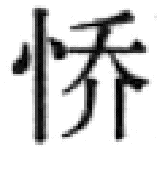萨罗国等国的国王和工商业主的支持，因为主张在宗教信仰方面“四姓平等”，从而也得到农民、手工业者和从事低贱职业的劳动者的支持，发展迅速。在释迦牟尼去世一二百年的时候，佛教僧团发生分裂，形成以主张改革的大众部和主张维护原始佛教教义和戒律的上座部两大派，此后在这两个大的部派之下又出现很多支派，在印度孔雀王朝阿育王（约前273—前232）时期，佛教从恒河中下游地区传到印度各地，并不断向邻国传播，逐渐成为世界性宗教。
在公元前后的两汉之际，佛教从古印度经中亚传到中国内地。《三国志·魏志·东夷传》注引鱼豢《魏略·西戎传》说，汉哀帝元寿元年（前2年）博士弟子景庐受大月氏（今阿富汗、巴基斯坦北部一带）使者伊存口授《浮屠经》（大概是讲佛陀生平的经）；东汉初年，楚王刘英“诵黄老之微言，尚浮屠之仁祠”［22］；汉明帝也曾派人去西方求法，取回《四十二章经》（小乘佛经的摘要著作）译为汉文。
当时盛行黄老、神仙方术，人们也把佛教看成是道术的一种。东汉末年，安息（在今伊朗高原东北部）僧安世高等人来华译出大量小乘经典，其中包括介绍佛教基本教义的理论著作（阿毗昙）和指导修持禅定的禅经（如《安般守意经》等）。支谶是同时来华的大月氏僧人，他第一次把大乘般若学传入中国内地。所谓般若是指一种能令人达到彻底解脱的最高境界的特殊智慧。他所译的《般若道行品经》（或《道行般若经》）很快就受到人们的注意，在魏晋曾风靡一时。
魏晋盛行玄学，重《老子》、《庄子》和《周易》，崇尚清谈。魏正始（240—249）年间，何晏、王弼提倡“贵无”，认为天下万有“以无为本”，名教出于自然。魏晋之间，向秀、郭象注《庄子》，认为万有“自生”、“自尔”、“独化”，儒家名教即自然。以般若学说为基本内容的大乘空宗因为在思想上与玄学有相似的地方（如空与无、真俗二谛与言意之辨等），所以受到士大夫的欢迎，并得到迅速传播。《般若经》宣传“诸法性空”，认为世俗认识及其面对的一切现象都是因缘和合的产物，假而不实，唯有体认永恒真实的、超越世俗认识的“实相”、“真如”、“第一义谛”才能达到觉悟。玄学家以佛教般若学说来发挥玄学的理论，佛教学者用玄学来解释般若学说，佛玄交融贯通，两晋时期形成具有中国民族特色的般若学派——“六家七宗”，其中以本无宗（主张本体为空）、心无宗（空心不空外境）、即色宗（万有即空）影响较大。
东晋十六国后期，战乱不断，生灵涂炭，佛教因宣传善恶因果报应和彼岸世界的教义，受到社会普遍欢迎，发展很快，几乎普及社会各个阶层。西域高僧佛图澄（232—348）受到后赵石勒、石虎的尊崇，除传教外，还参与军政机要。在他的影响下，朝廷正式允许汉人出家为僧。北方广立佛寺，僧人增加很多。佛图澄的弟子分散到全国各地，对佛教义理和组织制度的发展，影响很大。其中道安（312—385）提倡般若空宗，用玄学观点论释般若理论，主“本无宗”。他还整理佛典，撰《综理众经目录》，为僧团制定仪规，组织僧人系统翻译小乘经戒。他的弟子慧远（334—416）住庐山，广交朝野名士，提出协调王权和僧团、名教与佛法的理论，既倡般若，又倡西方净土信仰，对后世净土宗的创立有直接影响。后秦王姚兴迎龟兹（今新疆库车县）名僧鸠摩罗什（343—413）至长安，译出经典35部300卷。（图10—8）其中大乘经典《般若经》（大小品）、《大智度论》、《中论》、《十二门论》和《百论》、《法华经》等，对后世影响深远。弟子僧肇（384—414）著《不真空论》、《物不迁论》、《般若无知论》等，发挥般若中观的学说，对以往佛学和玄学所讨论的中心问题作了总结，认为世界在本质上是虚幻不实的，是静止不动的，但“如来功流万世而常存，道通百劫而弥固”，“道远乎哉？触事而真。圣远乎哉？体之即神。”劝人们应相信佛教报应理论和悟道成佛学说。
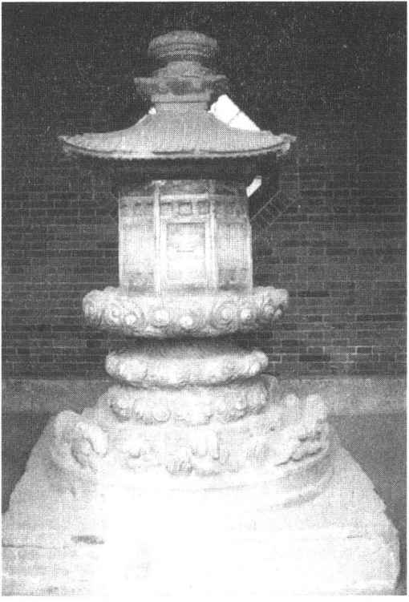
图10-8 陕西草堂寺鸠摩罗什舍利塔
南北朝时期，从广译佛经进入深入地研究佛经，讲经和著述之风甚盛。围绕研究佛经的不同和理论主张的差异，出现了涅槃（指摆脱人间诸般烦恼、熄灭生死轮回后获得的一种精神境界）、成实、三论、毗昙、地论、摄论、楞伽等学派。继魏晋盛行般若之后，涅槃佛性学说特别受到人们的重视。竺道生（355—434）在南朝大讲“一切众生，悉有佛性”，“一阐提人（谓善性灭绝者）皆得成佛”和“顿悟成佛”的理论，在佛教界发生了振聋发聩的作用。南朝宋文帝和梁武帝等人都提倡这个理论。从此，般若空义和涅槃佛性理论成为中国佛学的两大理论支柱。《大乘起信论》虽题为印度马鸣造、陈真谛译，实际是南北朝末的编译著作。此书认为人的精神世界（心）生来即具有善（真如、净）、恶（无明、染）的两个方面，前者即众生所秉有的佛性，后者即日常情欲烦恼；前者被后者遮蔽不能显现。此书主张通过信奉佛教，坚持断恶修善的修行，就可使佛性显现，达到解脱。这种佛教心性论不仅为隋唐大部分佛教宗派所吸收，对哲学界心性论的兴起也有直接推动作用。
南朝的统治者都崇信佛教。梁武帝曾四次舍身寺院，由朝廷和群臣以巨额金钱赎回。梁武帝并多次登坛讲经，从事著述。（图10—9）北朝虽发生过北魏太武帝（446）和北周武帝（574）发起的两次灭佛事件，但总的来说是积极扶植佛教的。云冈、龙门石窟的建造，大量寺院的修建就是证明。正是由于统治阶级的支持，南北朝时已形成了相当稳固的以经营土地为中心的寺院经济，并在世俗官僚制度之外形成了比较完备的僧官制度。
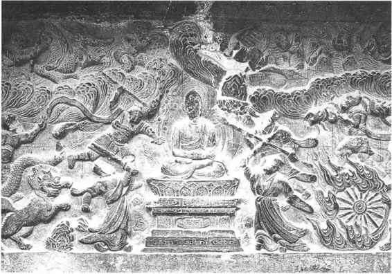
图10-9 南京南朝梁栖霞舍利塔浮雕降魔变
隋唐时期，在国家分裂了近三百年以后重新建立统一的封建王朝，政治、经济和文化都取得了空前发展，成为亚洲乃至世界的先进国家。由于统治阶级重视文治政策，对儒、释、道三教都予以扶植，于是佛教进入鼎盛时期。隋朝承北周武帝灭佛之后，文帝自小受尼鞠养，即帝位后常对群臣讲：“我兴由佛法。”［23］他广建佛寺，度僧尼出家，命人译经写经，从仁寿元年（601）开始，前后令百余州（全国共有州或郡190个）建舍利塔。据《辨正论》卷三记载，隋时建寺3985所，度僧尼23.6万余人。唐太宗即位后，曾命在全国“交兵之处”建立寺刹，“给家人、车、牛、田庄，并立碑颂德”。［24］在贞观十一年（637）下的诏令中，他虽然表示有意抬高道教，说“朕之本系，出于柱史（老子李耳）”、“自今以后，斋供行立，至于称谓，其道士女冠，可在僧尼之前”，［25］但实际上，采取的是二教并重政策。武则天曾利用佛教篡夺帝位，于是谕令佛教应在道教之前，从此进一步刺激了佛教的发展。唐武宗时曾一度灭佛（845），没收寺院土地财产，毁坏佛寺、佛像，命僧尼还俗。据《资治通鉴》卷二四八记载，被毁寺院达4600所，招提兰若等佛教建筑4万余所，僧尼还俗的达26万多人，没收的寺院土地达数千（“千”当为“十”）万顷，查出奴婢15万人。但武宗以后，佛教很快又得到恢复和发展。
佛教传入中国后，经过六七百年的初传、普及，逐渐成为中国民族文化的一个组成部分，寺院经济也成为中国封建经济的一个方面。在教义理论方面，佛教对中国传统思想文化中的哲学本体论、天人关系论和人性论以及宗教习俗、鬼神观念等广泛吸收，在僧团组织方面，采取了中国封建宗法观念和制度，从而形成许多具有鲜明民族特色的佛教宗派。
在隋唐时期形成的主要佛教宗派有：天台宗、三论宗、法相宗、华严宗、律宗、禅宗、净土宗、密宗。其中对后世影响较大的宗派有天台宗、法相宗、华严宗、禅宗和净土宗。
天台宗 创始人是隋代天台山国清寺的僧人智觊（531—597），以《法华经》和智觊的《法华玄义》、《法华文句》和《摩诃止观》为主要依据。此宗认为世界万有乃一心的产物（“性具”），所谓“一念三千”。在这个前提下又提出“一心三观”和“三谛圆融”的理论，认为世界一切空幻无实（空谛），存在者皆为假有或名相（假谛），二者不即不离或相即相离，是万有的本质（中谛）。空、假、中三谛系于一心，修行者通过体认三者融通相即的关系，可灭惑证智，达到解脱。佛与众生没有根本差别，也是相即不二的。人所具之本性有善恶两个方面（性具善恶），极恶的人也有可能修证成佛。九祖湛然（711—782）甚至提出连无情草木瓦石也有佛性。
法相宗（也称唯识宗） 创始人是唐代名僧玄奘（602—664）和弟子窥基（632—682），以《解深密经》、《瑜伽师地论》、《成唯识论》和窥基著的《成唯识论述记》等为主要依据。（图10—10）本宗对世界各种现象，特别是心理活动和精神现象作了极为细密的分析和论证，认为一切皆为精神的产物，所谓“三界唯心，万法唯识”。把人的主观认识机能或精神作用分为“八识”，即眼、耳、鼻、舌、身、意、末那、阿赖耶八种识。前六识是认识外界的六种机能或作用，末那识是联系前六识和第八识阿赖耶识的中间桥梁，而阿赖耶识是主宰前七识的“根本识”，实为灵魂。认为构成世界万物的精神种子即藏在阿赖耶识之中。世界上一切事物和现象既然属于精神作用的因缘和合而显现，那么就不是真实的，只有清净的真如佛性（“圆成实性”）才是真实的。人要达到觉悟就应体认真如。为此应断除对法、我的两种执著，达到“转识成智”，觉悟成佛。
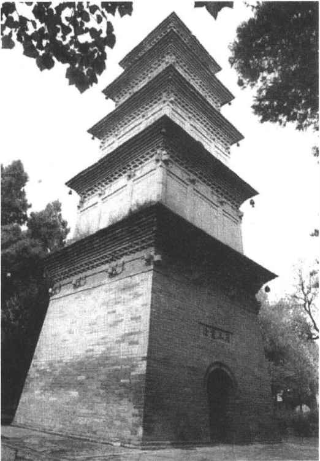
图10-10 陕西兴教寺玄奘墓塔
华严宗 实际由唐初僧人法藏（643—712）创立，主要依据《华严经》和法藏所著《华严经探玄记》、《华严五教章》等。因法藏号贤首，故该宗也称贤首宗。主张“真如缘起”论，认为世界上一切事物和现象是“一真法界”（真如、法性）的显现。它用事法界、理法界、理事无碍法界、事事无碍法界（四法界）的教义论证世界的本质和现象，宣称体现真如本体的“理”，显现出世界一切千差万别的事物和现象（“事”），如月映万川那样，“一一事中，理皆全遍”，“事理融通，非一非异”。［26］世界上没有任何矛盾和斗争，各种事物（包括概念）皆“圆融无碍”。既然理体与事相融通，众生与佛也就无根本差别。众生之所以轮回于生死苦恼之中，是因为有“妄想”（世俗认识和情欲），如果能认识法界缘起重重无尽，事事无碍的道理，就可清除“妄想”，而达到觉悟。
禅宗 唐中叶以后，逐渐发展成为中国佛教的最有影响的宗派。禅宗奉北魏时来华弘传禅法的印度僧菩提达摩（？—约536）为初祖，以慧可为二祖，僧璨为三祖，道信为四祖，弘忍为五祖。但实际上唐末以来所流行的禅宗是由唐中期的被称为六祖的慧（或作“惠”）能（638—713）创立的所谓“南宗”。《楞伽经》、《金刚般若经》、《涅槃经》、《大乘起信论》等对该宗有较大影响。记载慧能生平和说法语录的《六祖坛经》以及历代禅师的语录为该宗传授禅法的重要依据。据记载，五祖弘忍（602—675）弟子中有神秀、慧能二人。神秀（？—706）的禅法主张可用他作的心偈表示：
身是菩提树，心如明镜台，
时时勤拂拭，莫使有尘埃。（《坛经》敦煌本）
主张渐悟，认为通过勤苦修行，坐禅观心，可以消除“妄念”，达到觉悟。慧能主张顿悟，针对神秀的偈也作了一偈，说：
佛性常清净，何处有尘埃。（同上）
后两句也作“本来无一物，何处有尘埃”［27］。慧能认为心性本净，一切皆空，何有尘埃可染。他指出神秀的“观心看净”也是一种执著，因为“净无形相”。他主张在坚信自身本有佛性的基础上以任运自在为坐禅，不借助世俗观念、思虑和名相，排除任何心理追求，通过直观内省使心与“真如”相应，此即所谓“立无念为宗，无相为体，无住为本”［28］。神秀的禅系因在北方，被称为北宗。慧能的禅系开始在南方流行，称为南宗。（图10—11）慧能死后，弟子神会（684—758）与北宗辩论，推广南宗禅法。在“安史之乱”（755—763）之后，南宗在朝廷的支持下逐渐风行全国，北宗湮没无闻。禅宗简化修行方法，不重读经、礼佛、修忏，寓修道求佛于行住坐卧，搬柴运水的日常生活之中。慧能门下，著名的有行思、怀让两系。行思一系形成曹洞、云门、法眼三宗。怀让一系形成沩仰、临济二宗。临济宗在宋代分为黄龙、杨岐二派。以上合称“五家七宗”。其中影响较大的有临济、曹洞二宗。
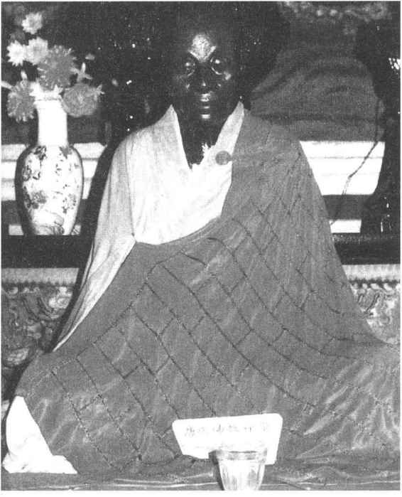
图10-11 安徽九华山南华寺供奉的慧能肉身像
净土宗 严格地讲是对阿弥陀佛及其西方净土的一种信仰，有多支。其中一支是由唐代道绰（562—645）及其弟子善导（613—681）创立的，主要依据《无量寿经》、《阿弥陀经》、《观无量寿经》和《往生论》等。此宗认为相信阿弥陀佛及其西方极乐世界（净土），反复诵念“南无（意为归命，致敬）阿弥陀佛”，就可消除无量的罪，死后可被阿弥陀佛接引往生西方净土，过福寿无边的生活。
佛教是宗教，自然有其信奉崇拜的超自然的神灵至尊。佛教对佛、菩萨的信仰就是这种神灵崇拜的表现形式。佛教的经典中不乏否认有神的论证，但这主要是反对婆罗门教或其他“外道”的神灵崇拜的，并不是从实质上反对一切神灵。佛教经典，特别是大乘经典中所描述的佛、菩萨，一般都神通广大，威力无穷，虽不用“神”的称呼，但实际上就是宗教学里所说的神。这里仅介绍佛、菩萨信仰的一部分内容。
佛 佛教把“佛”奉为最高的崇拜对象，但对佛的解释却是各种各样的。原始佛教基本经典《阿含经》中所说的佛，一般是指教主释迦牟尼，其中有关“过去七佛”的说法，当是进入部派佛教以后被加进去的。部派佛教时期（公元前4—前3世纪）对释迦牟尼佛进一步神化，而在进入大乘佛教时期（公元前后）以后，除信奉释迦牟尼佛之外，还信奉种种佛。大乘教派宣称三世十方，到处有佛，其数多如恒河之沙，如过去有七佛、燃灯佛；未来有弥勒佛；东方有阿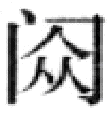佛、药师佛；西方有阿弥陀佛等。从佛身说，有无所不在的“法身佛”（与法性、真如、佛性大同），有作为修行果报之身及应菩萨需要而显身的“报身佛”，有随三界六道的不同情况而显化出来的“化身佛”，还有其他说法。在不同经典、不同宗派，虽同奉佛为本尊，但或以释迦牟尼佛为主尊，或以卢遮那佛为主尊，或以大日如来（摩诃毗卢遮那，实与前同）为主尊，或以阿弥陀佛为主尊，等等。因此，不仅汉地寺院与藏蒙地区寺院的佛像不全相同，在汉地寺院的佛像也有差异。
阿弥陀佛 中国对阿弥陀佛及其西方净土（极乐世界）的信仰特别盛行。从东汉末年到东晋，有关这种信仰的佛经陆续传到中国，以《无量寿经》、《阿弥陀经》以及《观无量寿经》为主要经典，宣称遥远的古代有个国王叫法藏，他出家修道，发下48个大愿，表示在他成佛后，他所管辖的佛国净土内没有地狱、饿鬼、畜生，一切众生皆可转生此处过长寿美满的生活；他果然成了佛，号阿弥陀佛（无量寿佛），其佛国在西方，叫“极乐世界”；众生一心专念阿弥陀佛，或口称阿弥陀佛，死后就可往生到此处。东晋以后，弥陀信仰迅速流行，至唐代由道绰（562—645）和善导（613—681）成立以弥陀信仰为基本内容的净土宗，特别提倡口称念佛，说一心专念阿弥陀佛的名号，可以消除无量的罪业，死后可转生西方极乐世界。净土宗在各个佛教宗派中是最为流行的，因修行方法简单，在下层民众中影响很大。宋代以后，它与禅宗结合密切。
观世音菩萨 西晋竺法护译出《正法华经》，其中的《光世音普门品》就是讲观世音信仰的。“光世音”是“观世音”的异译。东晋鸠摩罗什所译《法华经·观世音菩萨普门品》是另一种异译本，后世最为流行。“观世音”在唐代为避唐太宗之讳也称“观自在”。据称，观世音菩萨在众生遭受苦难之时，会“观其音声”而去解救。在佛教信仰中，观世音菩萨是大慈大悲、以解救众生的现世苦难为主要职责的。人们遇到水火灾害、疾病以及遭遇盗贼，生命受到威胁之时，如果称念观世音菩萨的名字，据说就可得救；甚至向观世音祈求生个好儿好女，也可如愿。佛经还说观世音可化为各种形象，或以男以女，以人非人，以贫以富的等等形象，向众生传教说法，救人苦难。隋唐以后，密教观世音经典被大量译出，介绍了种种观世音形象和相应的供养礼拜仪规、秘咒，其中主要的观世音形象有十一面观音、千手观音、马头观音、不空罥索观音、如意轮观音、准提观音等。唐代以后，妇女形象观世音菩萨的信仰和造型逐渐盛行，其中的妙善公主观音、马郎妇观音（鱼篮观音）、水月观音、杨柳观音等比较有名。南宋祖琇《隆兴佛教编年通论》载云：过去有位国王与王后生有三女，最小女儿妙善公主生得秀丽慈祥，因抗拒婚配而出家为尼。后来父王长癞，久治不愈。有神医称如得到“无瞋人手目”，便可把病治好。妙善公主于是献上了自己的手、眼。其父病愈以后，入山致谢，此时妙善显化为“千手千眼圣像”。此为妙善公主观音的出处。所谓马郎妇观音，源于这样一个传说：唐末陕西有位年轻貌美的妇女，挎篮卖鱼，后嫁给一位能熟背《法华经·观世音普门品》的马郎，结婚当天，“客未散而命终”。有老僧说她是观世音化身。女性观世音形象，在宋以后特别流行，小说、造像中大量出现。（图10—12）
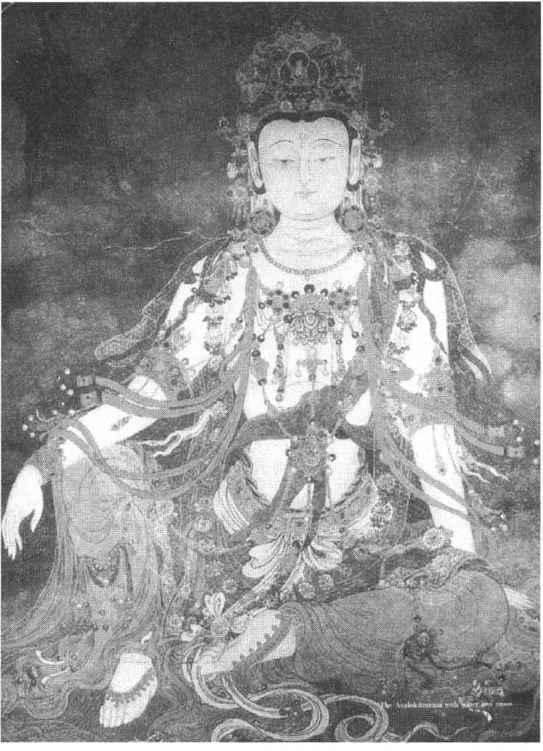
图10-12 北京法海寺壁画水月观音
弥勒菩萨 佛教信仰中，弥勒是将要继承释迦牟尼佛位、象征“未来”与光明的菩萨。西晋至南北朝，有关弥勒的经典《弥勒下生经》、《弥勒成佛经》、《观弥勒上生兜率天经》等被译出。这些经典讲弥勒所在的佛国净土在兜率天，如果有人信仰并称诵弥勒的名号，死后可转生此处。又说，弥勒菩萨在释迦牟尼佛入灭五十六亿多万年以后下降人间，在龙华树下成佛，普度众生。据称此时到处光明，五谷丰登，民众长寿多福。五代以后，人们把布袋和尚看做是弥勒菩萨的化身，一些寺院里的弥勒造像取布袋和尚的形象。《宋高僧传》卷二十一载，布袋和尚名契此，明州（今浙江宁波市）奉化人，常以拄杖背一布袋入市乞讨，随处坐卧，出语无常，向人预告吉凶，死前说偈：
弥勒真弥勒，分身千百亿；
时时示时人，时人自不识。
世人以为他是弥勒的显化。他死后，人们便以他的形象来塑弥勒佛的造像。中国古代农民起义军常打出弥勒的旗帜来号召民众参加，因为弥勒象征未来和光明，在农民遭受天灾、残酷的剥削压榨时，便期望弥勒出世，改变他们的处境。
宋代以后，中国佛教内部各宗逐渐融合，其中以禅宗和净土宗，禅宗和天台、华严宗的结合最为密切。一般说来，净土宗在组织上最为松散，没有独立的教团，但它的教义、修行方法几乎为一切宗派所吸收。密宗在唐末已经衰微，它的修行仪规、秘咒，也被别的宗派吸收。此外，佛教与道教、儒家学说，也日益结合，一般称为“三教合流”或“三教合一”。佛教日益世俗化，是它在新形势下的发展。佛教在唐初传入西藏地区，8世纪后形成藏传佛教（喇嘛教），元初确立政教合一体制。15世纪，宗喀巴（1357—1419）创立黄教，成为藏传佛教主流，并流传到青海、内蒙等地区。
佛教是中国封建意识形态中的重要组成部分，它影响到哲学、道德、文学、音乐、雕塑、美术等各个文化领域。佛教教义中的时空无限、体用相即、心性善恶以及对心理作用的细密分析等，对中国哲学的发展起过启示和推动作用。中国佛教伴随中外政治、经济和文化的交流也相继传入朝鲜、日本和越南等国家或地区，长期以来是联结中国和亚洲信奉佛教国家的文化交流的重要纽带和桥梁。
我国从远古以来就有灵魂不死的观念和对天帝鬼神的信仰，秦汉以来盛行黄老神仙方术和天人感应、阴阳五行学说。东汉顺帝时，以黄老学说为基础，吸收传统的鬼神观念和神仙方术，正式形成道教。当时的道教有两支：一是张陵创立的五斗米道，一是于吉等人创立的太平道。
据《后汉书·刘焉传》和《三国志·魏志·张鲁传》记载，张鲁的祖父张陵（张道陵）在东汉顺帝时到蜀郡鹄鸣山（在今四川省大邑县内）创立道教，作《道书》，凡信奉者须出五斗米。因此他创立的道教被称为“五斗米道”或“五斗米师”。因张陵称受太上老君之命为“天师”，故亦称“天师道”。张陵死后，其子张衡继之；张衡死后，其子张鲁继之。五斗米道奉老子为教主，以《道德经》为主要经典，今存《老子想尔注》残卷（敦煌文书中发现）即为张陵注释《道德经》之作。教人奉道悔过，用符水咒法治病。设祭酒统领教徒，教徒有病，令自首罪过，写三份服罪书表，一置山上，表示致意于天；一埋地下，一沉水下，称“三官（天地水三官）手书”。又在路旁设置义舍，放置米肉，行人可量腹食用，但不可食之过量，否则受到鬼的祟害。犯法者先原谅三次，最后才用刑。史称张鲁用此法治汉中30年，直到建安二十年（215）才被曹操吞灭。
与张陵创五斗米道几乎同时，于吉等人在东海（治所在今山东郯城北）创立太平道。顺帝时琅玡人宫崇到洛阳向朝廷献其师于吉所著《太平清领书》（《太平经》）。太平道的主张可从《太平经》中了解。此书分甲乙丙丁戊己庚辛壬癸十部，每部17卷；共170卷。其基本思想来自两汉流行的黄老道家，也吸收了董仲舒以来的神学目的论和阴阳五行思想。东汉襄楷说此书“专以奉天地、顺五行为本，亦有兴国广嗣之术。其文易晓，参同经典”（《后汉书·襄楷传》）；《后汉书》作者范晔说此书“其言以阴阳五行为家，而多巫觋杂语”。（同上）
《太平经》神化老子，把他尊为九玄帝君，为至尊之天神。书中借用道家和阴阳家的语言宣传神仙信仰，兼及天地、五行、灾异、瑞应、养生、巫术及伦理道德、政治主张等等。从《太平经》可以看出，太平道的创立者有强烈的干预社会政治的愿望。它用神学的语气强调忠君孝亲，严格上下等级，辅助帝王“致太平”。《太平经》中也有一些批评贫富悬殊、“为富不仁”的内容，反对以强凌弱，主张自食其力和救穷救急。东汉末年黄巾起义（184）曾利用《太平经》。起义军首领张角在发动和组织起义的过程中，自称“大贤良师”，“持九节杖为符祝，教病人叩头思过，因以符水饮之。得病或日浅而愈者，则云此人信道，其或不愈，则为不信道”。［29］这与五斗米道十分相似。黄巾起义失败后，太平道也受到镇压。但道教作为一种宗教在江南、江北广大地区仍然继续流传，在上层社会也拥有不少信徒。
东晋时道教日渐兴盛。据史书记载，东晋的哀帝信奉道教，常服“长生药”，以致中毒不能亲自执政。著名大臣郗愔、郗昙兄弟和王羲之家族，都信奉天师道，与道士过从甚密。道士葛洪（283—343）以博学知名，尤好神仙导养之法。其从祖葛玄为道士，以其炼丹秘术授弟子郑隐。葛洪曾师事郑隐，又从师于南海太守鲍玄。葛洪因功官至司徒掾、咨议参军，后于罗浮山炼丹，所著《抱朴子》内外篇70卷。（图10—13）《内篇》言“神仙方药，鬼怪变化，养生延年，禳邪却祸之事”，属道家；《外篇》论述“人间得失，世事藏否”，属儒家。葛洪提出改造民间流行的道教，建立官方道教的主张。他认为应把儒家纲常名教思想吸收到道教教义之中，求仙长生者不仅要致力于炼丹、服药和“行气”内修，而且“要当以忠孝、和顺、仁信为本，若德行不修，而但务方术，皆不得长生也”［30］。葛洪还著有《神仙传》十卷、《隐逸传》十卷及《金匮药方》、《肘后要备方》等。
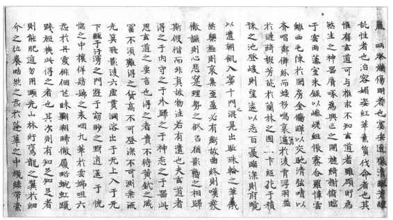
图10-13 抱朴子内篇卷第一残卷抄本，敦煌出土
在这个时期，道教在下层民众中也拥有众多信徒。在汉中、四川一带，道教十分流行。西晋末年，道教徒范长生“率千余家依青城山”。李特之子李雄攻入成都称王，拥立范长生为丞相，又拜为“天地太师”［31］。东晋末年孙恩、卢循曾以五斗米道为号召，在今山东南部和江浙一带领导农民起义，他们称自己的道徒为“长生人”。
南北朝时期，官方道教已经形成，道教受到统治阶级的保护和扶植。北魏太武帝太平真君（440—450）年间，嵩山道士寇谦之改革天师道，“除去三张伪法，租米钱税”［32］，吸收儒家学说及佛教经律格式、斋戒祭祀仪式，以“帝王师”、“辅佐北方太平真君”自任。自称受太上老君之命任“天师”之位，继张陵之后。因此把他创的道派称“北天师道”。寇谦之经司徒崔浩的荐引，受到太武帝的崇信，为他建天师道场及道坛。从北魏太武帝至北周诸帝即位都要登坛受符箓。
在南朝，刘宋时有庐山道士陆修静致力传道，“祖述三张（张陵、张衡、张鲁），弘衍二葛（葛玄、葛洪）”［33］，受到宋文帝、明帝的礼遇。他广搜道书，编成《三洞经书目录》，此为我国最早的道经目录。陆修静依据封建宗法制度和伦理，吸收佛教修持方法，广制斋仪，“意在王者遵奉”。他认为“斋直是求道之本”，重礼拜、诵经、神思。此为南天师道。
此后，南朝梁时茅山（今江苏南京市东南）道士陶弘景（456—536）自称得自上清系“真人”杨羲、许谧、许翙的真传，以茅山为中心传教，整理道教典籍。主要弘传《上清经》，是道教上清派的重要代表人物。所著《真诰》认为“道”为元气、太极，是天地万物之源。他构造道教神仙体系，主张三教合流，对后世影响很大。他还精于医学、天文历算。在医药学方面首创以玉石、草木、虫兽、果菜、米实等分类法。梁武帝对他十分崇敬，每有吉凶征讨大事，皆有咨询，时人称为“山中宰相”［34］。
从隋唐到明代中叶，道教进入兴盛时期。道教教义、仪式日益完备，形成庞杂的经典体系，在组织上存在全国性的管理体制和道官系统。
隋唐时期佛、道二教与儒家形成鼎足并立的局面。隋朝比较重视佛教。唐朝皇室自认为是道教教主李耳的后裔，以道、儒、释排列三教次序。高宗时尊老子为太上玄元皇帝，玄宗时“制两京、诸州各置玄元皇帝庙并崇玄学，置生徒，令习《老子》、《庄子》、《列子》、《文子》”［35］。玄宗还为《道德经》作注，并派使者搜访道经，亲自寻阅。在他主持下，首次把道教经典编为“藏”，其目为《三洞琼纲》，凡录目7300卷，命人传写，以广流布，名《开元道藏》。唐代著名道士王远知、成玄英、孙思邈、潘师正、王玄览、李筌、闾丘方远、司马承祯、吴筠等，在传教或整理道书、发展教义等方面都具有较大影响。
宋代皇室也尊崇道教，称其祖赵玄朗为道教尊神，封为“圣祖上灵高道九天司命保生天尊大帝”，并加封老子为“太上老君混元上德皇帝”。（图10—14）宋徽宗自称道君皇帝，于太学置《道德经》、《庄子》、《列子》博士，并自注道书。宋初道士陈抟（？—989）得到宋太宗赏识，好《周易》，作《无极图》、《先天图》，依托《周易》“太极”之说，图示内丹修炼过程。宋代周敦颐（1017—1073）著《太极图说》提出以“太极”为本原的宇宙构成论，邵雍（1011—1077）著《皇极经世书》也以“太极”（道、心、性）为宇宙本原，提出一套“象数之学”（“先天学”），据说都受到陈抟的影响。他们二人的学说对理学影响很大。宋代三教合一是时代潮流。道教对理学的影响是多方面的。宋儒“主静”的修养方法是源于《礼记·乐记》“人生而静，天之性也”，但也受到佛、道二教的影响。道士张紫阳（984—1082）著《悟真篇》，宣传内丹修炼，又主张三教合一，说“教虽分三，道乃归一”，主张以道教的修炼性命学说来统合三教。他的思想对后世道教影响甚大，南宋以后被奉为全真道南宗之祖。
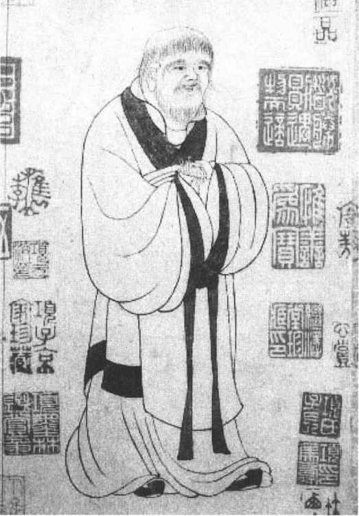
图10-14 元赵孟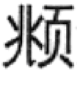绘老子像
南宋、金时期，国家南北分裂，道教内部也形成很多派别。在南宋统治下的南方，除以龙虎山为中心的天师道（传说张鲁之子迁居今江西贵溪县西南的龙虎山，宋真宗时始在此山置上清观，赐道士张正随号）［36］、茅山为中心的上清派、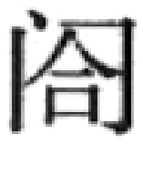皂山为中心的灵宝派以外，还兴起如神霄派、清微派、混元派、东华派、净明派等，它们多从前述三山符箓派分化而来。这些派别倡导儒、释、道三教同源一致，融合儒、释，又以大量援引、融摄理学思想为特色。在北方地区，有金大定七年（1167）由王重阳创立的全真道，此外还有真大道教和太一道等［37］。但对后世影响最大的只有原来是天师道的正一道和全真道二派，它们直接得到元明统治者的支持。
南宋以后，南北天师道逐渐与上清、灵宝等符箓派合流，称正一道。元世祖平定江南，命36代天师张正演“主领江南道教”；元成宗大德五年（1301）授38代天师张与材“正一教主，主领三山（龙虎、皂、茅山）符箓”［38］。明代改天师为“正一嗣教真人”，后又恢复天师号。清代对张天师只许称“正一真人”，又不许朝觐。正一道以《正一经》为主要经典，崇拜神仙，重视画符念咒，降神驱鬼，祈福禳灾，不注重修持，其道士可不居观而有家室。
全真道由金朝王重阳（1112—1170）创立于山东宁海（今牟平），入道者称“全真道士”。主张三教合一，以《道德经》、《般若心经》、《孝经》为主要经典，教人“孝谨第一”，“正心诚意，少思寡欲”；认为“性者神也，命者气也，性命是修行之根本”；重视个人修炼“性命”，不尚符箓和黄白之术；主张修道者应出家，仿照佛教建立出家和丛林制度［39］。王重阳死后，此派迅速流传北方广大地区。元太祖成吉思汗时，王重阳的弟子丘处机（1148—1227）应诏赴西域雪山，时太祖正进行西征，丘处机劝他“不嗜杀人”；“及问为治之方，则对以敬天爱民为本；问长生久视之道，则告以清心寡欲为要”。［40］因此受到礼遇，全真道进入全盛期。（图10—15）此后因全真道广占佛教寺院改为道观，大肆宣传《老子化胡经》等，引起佛教信徒和僧众的不满。元宪宗五年（1255）召少林寺长老福裕与道士李志常（掌道教）辩论，志常词屈，于是降诏禁止毁坏佛像并伪造经文。元世祖至元十八年（1281）命佛道二家辩论道教经典真伪，后将《道德经》以外的道书焚毁。全真道为此受到打击。［41］元代统一中国后，禁令渐弛，全真道又得到恢复。
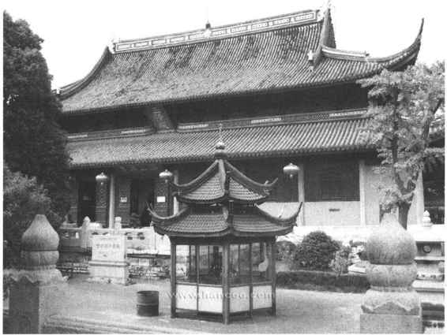
图10-15 苏州玄妙观
明代重正一道，明世宗尤躬亲斋醮，不理朝政。道士邵元节、陶仲文出入宫廷，担任要职。明代朝廷重视搜集整理道书，在正统、万历年间分别编印《正统道藏》、《万历续道藏》共5485卷。明代在首都设道录司掌天下道士。清代以后，道教日益衰微，其管理制度基本因袭明朝。
道教所奉的神甚多且杂，中国自古以来所传说的神灵几乎都可在道教中找到它们的影子。这里仅介绍几个主要的。
三清指玉清、上清、太清，是道教所奉的最高尊神。玉清是天宝君，也称元始天尊，说是由混洞太无元青之气化生，居清微天的玉清境；上清是灵宝君，又称灵宝天尊，说是由赤混太无元玄黄之气化生，居禹余天之上清境；太清是神宝君，也称道德天尊，即老君（老子），说是由冥寂玄通元玄白之气化生，居大赤天之太清境［42］。据说“此三号虽年殊号异，本同一也”（《云笈七签·三宝大有金书》）。它们所由以化生的三气是天地万有的本原，此三位尊神统御诸天神。（图10—16）
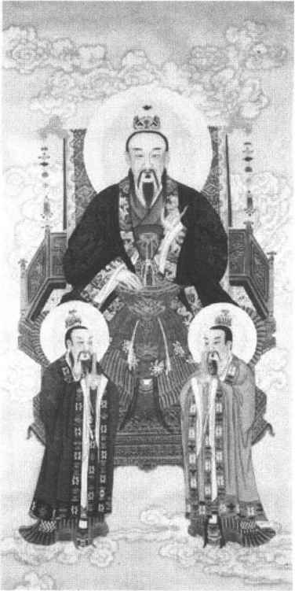
图10-16 玉清元始天尊像
道教最早尊奉老子，如张陵《老子想尔注》说：“一（按，指“道”）散形为气，聚形为太上老君。”《魏书·释老志》说：“道家之原，出于老子。其自言也，先天地生，以资万类。上处玉京，为神王之宗；下在紫微，为飞仙之主”，为黄帝、帝喾之师。可见，这里的老子（太上老君）即为“道”的人格神。
据近人考证，元始天尊的偶像崇拜始于南北朝。《隋书·经籍志》谓：“元始天尊，生于大元之先，禀自然之气，冲虚凝远，莫知其极……天尊之体，常存不灭。”看来也是“道”的神化。唐代道观内立元始天尊像，左右立二真人夹侍。从此对元始天尊崇拜的风气便盛行开来。
四御 在三清之下的四位大帝：第一是玉皇大帝，又称昊天金阙至尊玉皇大帝，是总执天道的地位最高的神，如同人间的皇帝。宋真宗、徽宗都曾奉上尊号。第二是中央紫微北极大帝，是协助玉皇执掌天地经纬、日月星辰和四时气候之神。第三是勾陈上宫天皇大帝，是协助玉皇执掌北极和天地人三才，统御诸星，并主持人间兵革之神。第四是后土皇地祇，或后土皇祇，为执掌阴阳化育万物之美、山河大地之秀的女神。
此外，道教还尊奉日月五星、四方之神（青龙、朱雀、白虎、玄武）等等。对民间早已存在的自然神，诸如雷神、风伯以及与日常生活密切相关的门神、灶神及城隍、土地等神，道教也都信奉。至于道教传述的神仙更多，如赤松子、黄帝、西王母、东王公、三茅真君……八仙等等，或为神话传说，或为修道者的神化，兹不详述。
道教追求“长生不老”，自然重视养生修炼之道。其中有直接继承道家的，有的则在秦汉神仙方术的基础上有所发展。在修炼方术中，有以静修心神的“守一”内修方术，也有以吐纳为主的呼吸修炼方术“服气”（行气）、服食药物（或草药，或烧炼的丹药）的“服食”等等。道教的修炼方术中虽含有糟粕，但也含有不少我国古代人民在与疾病斗争中所积累的医药保健经验，至今仍有一定的借鉴意义。
在中国古代封建思想结构中，儒、释、道三教是三大精神支柱。道教与儒、释既有互相排斥的一面，同时又互相吸收。在历史上，道教作为华夏之教有时站到儒家一边共同对抗佛教。宋代以后三教合流已成定局。道教从创立以来，对中国古代的政治、哲学、文学、艺术以及医药、卫生保健等各个领域，都产生过深刻影响。
民间秘密宗教是指在民间秘密流行而受到封建统治阶级禁止和镇压的宗教。严格说来，东汉以来已存在秘密宗教。但这里所说的是特指宋元以来，特别是明清的秘密宗教。宋以后中国封建社会进入后期，各种社会矛盾日益激化，农民反抗封建统治阶级的斗争方式也是多种多样的，其中打着宗教的旗帜，或以宗教作为组织形式的农民起义时有发生。农民利用的宗教，一般就是秘密宗教。由于时代潮流的影响，这些宗教都具有三教合一的特点，并且带有强烈的政治色彩。影响较大的有白莲教、摩尼教、罗教、黄天教、红阳教、闻香教、八卦教等。
白莲教 原为佛教净土宗的一支，称白莲宗，为南宋初茅子元所创立。他先学天台宗，后慕东晋慧远建白莲社遗风，“劝人皈依三宝，受持五戒”，编成《莲宗晨朝忏仪》，代众生礼佛忏悔，祈愿众生往生净土，在平山淀山湖（今上海青浦县西）建立“莲宗忏堂”，自称“白莲导师”。他主张禅、净一致，即使“不断烦恼，不舍家缘，不修禅定”，也可往生净土。官府以“事魔”之罪把他流放到江州（今江西九江），以后被赦，应诏为宋孝宗说教义，受赐“劝修净业莲宗导师慈照宗主”，著有《圆融四土图》等。［43］该宗教徒“谨葱乳，不杀，不饮酒，号白莲菜”［44］。元代以后，此宗吸收弥勒信仰，认为弥勒菩萨将从兜率天宫下生人间成佛，在龙华树下三度说法度众，信徒到处成立白莲社。元武宗至大元年（1308）、英宗至治二年（1322）反复遭禁。白莲宗在流传中又吸收摩尼教的二宗（光明、黑暗）、三际（初、中、后）教义及其明王信仰，认为光明（善的方面）终将战胜黑暗（恶的方面），出现光明的王国。元末韩山童领导的红巾军起义曾利用白莲教，称“弥勒佛下生，明王出世”［45］。明正德（1506—1521）以后，受罗教影响，吸取“真空家乡，无生老母”观念，说无生老母派弥勒佛等神佛下凡，拯救众生回“真空家乡”。白莲教的教派很多，明代有闻香教、大乘教清茶门等教门；清代有清水教、八卦教、天理教等。利用这些教门起义的农民很多，著名的有明天启二年（1622）山东徐鸿儒起义，清嘉庆年间川、鄂、陕的白莲教大起义等。
摩尼教 公元3世纪，由波斯的摩尼所创立。此教在祅教二元论的基础上吸收基督教、佛教、诺斯替教（希腊—罗马古代秘传宗教之一）等教义而形成自己的信仰理论，以二宗（光明、黑暗）、三际（初际、中际、后际）为根本教义，认为“先知”摩尼作为明王的使者，将通过传教教化，最终战胜黑暗，出现光明王国。唐初传入中国，武则天延载元年（694），波斯国拂多诞持《二宗经》来华传教。唐玄宗开元二十年（732）敕：“末尼是邪见，妄称佛教，既为西胡师法，其徒自行，不须科罚。”［46］此后在两京及荆扬诸州都建有为波斯人及回纥人使用的摩尼教寺，其徒白衣白冠。（彩图12a、b）唐武宗会昌五年（845）灭佛，摩尼寺也被毁，教徒被迫还俗，此后便成为秘密宗教。五代梁贞明六年（920），陈州母乙曾利用摩尼教发动起义。《佛祖统纪》卷五十四记载：“其徒以不茹荤饮酒……画魔王踞坐，佛为洗足，云佛大乘，我乃上上乘。”统治者蔑称此教为“食菜事魔”教。北宋方腊起义（1120）曾利用摩尼教；南宋初年，信州、严州、宣州、赣州的农民起义也曾利用此教。
罗教 明正德年间（1506—1521）由山东即墨人罗清（又名罗梦鸿，后被教徒尊为罗祖）创立于直隶密云（今北京市密云县）。罗清著有《苦功悟道卷》。其教与禅宗南宗相近，主张不立文字，否定佛像寺庙；以“真空”（此取自佛教般若学）为宇宙本原，创“真空家乡，无生老母”八字真诀，劝人修证来世。该教的基本群众是漕运水手，以运河两岸为活动中心，在各地设有庵堂，内供奉罗祖像，并有五部文册经卷。曾对青帮的形成有较大影响。罗教后来分为无为教、大乘教，江南则有老官斋教。
八卦教 康熙年间（1662—1722）由山东单县人刘佐臣创立，以八卦作为组织形式，形成“内安九宫，外立八卦”的宗教体系。此教也称五荤道、收元教、清水教、天理教、九宫教等，实际是从元明白莲教演变而来。清中叶，山东的清水教起义和直、鲁、豫的天理教起义，清末的义和团运动，都曾利用此教。［47］
伊斯兰是阿拉伯语Islām的音译，意为“顺从”。伊斯兰教在中国也称“回教”、“清真教”、“天方教”等。7世纪初由阿拉伯半岛麦加人穆罕默德（约570—632）创立。主要教义是：信仰安拉（Allāh，中国也译为“真主”）是创造宇宙万物的唯一的神，穆罕默德是安拉的使者。以《古兰经》为根本经典，认为它来自安拉的“启示”。信世间一切事物都是安拉的“前定”，并信仰“死后复活”、“末日审判”等。规定教徒应做到“五功”：念“清真言”（“除了安拉，再没有神，穆罕默德是安拉的使者”）、礼拜、斋戒、纳天课（宗教课税）、朝觐（教徒如有可能，一生应去麦加朝觐一次）。穆罕默德创教后，在麦地那建立了政教合一的政权，随着阿拉伯半岛的统一，发展为全半岛的统治宗教，8世纪初发展为跨欧、亚、非三洲的世界性宗教。7世纪随着大食（阿拉伯）与中国的经济往来，传入中国。现史学界有的以唐永徽二年（651）大食朝贡使进献作为伊斯兰教传入中国的开始，也有学者认为伊斯兰教的正式传入应在唐肃宗至德二年（757）之后。唐时称伊斯兰教为“大食法”，杜环《经行记》最早记述了伊斯兰教的基本信仰和仪规［48］。但整个唐宋时期，信仰伊斯兰教的主要是来华的阿拉伯人、波斯人等。（图10—17）元代，随着西域等地被蒙古军征服，大量所谓“色目人”（包括畏吾儿、回回等十几个民族）来到内地，他们大部分已信奉伊斯兰教。此时大食人来华的也比前代多。因此，元代伊斯兰教得到较大发展，在《元史》和《元典章》中，一般把信奉伊斯兰教的人称为“回回”，其礼拜堂为“回回寺”。从元代政策来看，对伊斯兰教是歧视的。明清时期，伊斯兰教虽仍受到统治阶级的歧视和压迫，但取得比较深入的传播，教徒以中国人为主体，不仅信奉此教的汉人是中国人，就连过去来自阿拉伯、波斯等地的信徒，也成为中国人了。伊斯兰教深入到内地农村，各地建了很多礼拜寺。伊斯兰教在宗教教育、学术研究方面，也有较大发展。伊斯兰教的寺院教育，其首倡者是明代的胡登洲（1522—1597）。到清末，以礼拜寺为中心的宗教教育相当普遍，主要课程包括学习阿拉伯文、教授宗教法规和宗教哲学。明清时期，中国出了一批伊斯兰教学者，他们著述译书，对传教和伊斯兰教教育的普及，起了推动作用。其中明末清初的王岱舆所著《清真大学》、《正教真诠》，张中的《归真总义》，伍遵契所译《归真要道》，马注的《清真指南》，清代刘智的《天方性理》、《天方圣礼择要解》、《天方至圣实录》，马德新所译《四典要会》、所著《性命宗旨》等，都比较有名。马德新的《宝命真经直解》和清末马联元的《孩听》，可说是《古兰经》的最早汉文译本。［49］
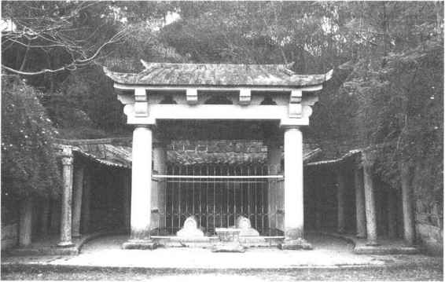
图10-17 泉州唐伊斯兰圣墓
伊斯兰教至今仍在回、维吾尔、哈萨克、乌兹别克、塔吉克、塔塔尔、柯尔克孜、撒拉、东乡、保安等民族中流行，在历史上对这些民族的生活习俗、道德观念和文化艺术等有过深刻的影响。
中国拥有丰富的宗教典籍，其中佛、道二教的典籍最多，影响也最广泛。它们不仅是宗教典籍，实际上也是中华民族文化遗产的一部分，其中包含不少有价值的以至科学的成分。
自佛教传入中国以后，中外僧人翻译了不少佛典，我国僧人也写出了大量佛教著作。从东晋道安开始，不少人对佛教典籍进行分类整理，撰写目录和提要。现存经录中，著名的有南朝梁僧祐《出三藏记集》、隋代费长房《历代三宝记》、唐代道宣《大唐内典录》、唐代智升《开元释教录》、唐代圆照《贞元新定释教目录》等。随着印刷术的进步，佛经从手写转为雕版印刷。我国第一部雕版《大藏经》是在北宋初的开宝四年（971）至太平兴国八年（983）由朝廷主持雕印的，所收范围主要以《开元释教录·入藏录》为准，后增加新译佛典，简称《开宝藏》。以后民间也多次组织雕印佛经，其中至今保存完备的有宋末元初由江苏碛砂延圣院雕印的《大藏经》，简称《碛砂藏》，现在流行的是上海1935年的影印本。辽、金、元、明、清各朝统治者也都组织雕印《大藏经》。中国的《大藏经》也流传到朝鲜、日本等国。现存13世纪由朝鲜高丽王朝雕印的《高丽藏》，主要依据的是《开宝藏》和《契丹藏》。现国内常用的有20世纪初由上海频伽精舍出版的《频伽校印大藏经》（《频伽藏》，此原据日本《缩刷藏经》排印），以及日本出版的《大正新修大藏经》（《大正藏》）。我国据《金藏》（《赵城藏》本）和其他经藏编校的《中华大藏经（汉文部分）》已经出版。西藏文《大藏经》由称做“甘珠尔”（经律）和“丹珠尔”（论）的两大部分组成，现存的主要有18世纪的北京版、德格版、纳塘版三种。这些《大藏经》是研究古代印、中、日等国佛教和佛教历史的重要资料，也是研究这些国家古代社会和文化的重要资料。
道教创立后，从《太平经》开始，以后各种道书大量出世。南北朝宋时，道士陆修静首编道书目录，名为《三洞经书目录》，书中称行世经典1090卷。“三洞”者，指洞真、洞玄、洞神，谓分别传授自天宝、灵宝、神宝三清系统的经典，即用作道书的分类法。唐开元年间（713—741），首次将道书编辑成“藏”，天宝七年（748）诏令传写传布。宋时编《宝文统录》，以后又加以增编。按三洞、四辅（太清、太平、太玄、正一）分类，采千字文编号，称《大宋天宫宝藏》，奠定了后世《道藏》编纂体制。宋徽宗崇宁年间（1102—1106）又重加校补，称《崇宁重校道藏》。政和年间（1111—1118）又增修，称《政和万寿道藏》，并予以雕印。此后金、元均以此藏为底本重行刊印。但以上道藏因兵火和元代佛道之争，几经焚毁，早已散失。明英宗正统十年（1445）由邵以正督校，编为《正统道藏》雕印；万历三十五年（1607）又雕印《万历续道藏》。此二藏至今保存，为研究道教提供了基本资料。此外，清康熙年间（1662—1722）彭定求收集道书二百多种，辑成《道藏辑要》，以二十八宿编号，分为二十八集，二百余册。虽为《道藏》的节本，其中也包括明版《道藏》之外晚出的道书。现流行的是光绪三十二年（1906）的重刊本《道藏辑要》。《道藏》内容十分庞杂，除道书外，还有诸子论著及注释，以及有关医学、化学、生物、体育、保健等方面的著作。
佛、道教经典部帙庞大，例如，《大正藏》全一百卷（册），收佛书3360部13520卷，现已出版的《中华大藏经》有106册，与正在编纂的续编共收佛书4200种，23000卷。道教书籍，正续《道藏》收道书5485卷。与此相比，修于清乾隆三十六年至四十六年（1772—1782）的《四库全书》，共收书3503种，79337卷。以卷数与之相比，佛书相当它的四分之一左右，道书相当它的百分之七左右。由此也可以看出佛、道教典籍在中国文化典籍中的分量之重。
［1］ 参见郭沫若《先秦天道观之进展》，载《青铜时代》，《郭沫若全集》历史编第一卷，人民出版社版，1982。
［2］ 参见胡厚宣《殷卜辞中的上帝和王帝》，载《历史研究》1959年第9、10期。
［3］ 《尚书·泰誓上》：“乃曰：吾有民有命。罔惩其侮。”
［4］ 《左传》昭公十八年郑子产语。
［5］ 《荀子·天论》。
［6］ 《墨子·天志》。
［7］ 此不引原文，参见《吕氏春秋》原文及东汉高诱注。
［8］ 《史记·封禅书》。
［9］ 以正月（建寅）为岁首，实际不是按五德说改正朔的，而是按汉时流行的“三统”说改的。按照这种说法，夏为黑统，商为白统，周为赤统，历史永远按黑、白、赤三统循环。汉继周，自然应为黑统，行夏历，以正月为岁首。见董仲舒《春秋繁露·三代改制质文》。
［10］ 《史记·封禅书》。
［11］ 《汉书·郊祀志》。
［12］ 《史记·封禅书》。
［13］ 《汉书·郊祀志》。
［14］ 《史记·天官书》正义引。
［15］ 《唐开元占经》卷五。
［16］ 《唐开元占经》卷一七引。
［17］ 《唐开元占经》卷一八引。
［18］ 以上可参考任继愈主编《中国佛教史》第一卷第一章，中国社会科学出版社，1981。该章为笔者执笔，这里仅选取要点介绍，一些地方有修改补充。
［19］ 《汉书·王莽传》。
［20］ 《后汉书·光武纪》。
［21］ 关于纬书的辑佚书，可看陶宗仪《说郛》、孙瑴《古微书》、马国翰《玉函山房辑佚书》等。日本安居香山、中村璋八编有《重修纬书集成》八册，收集详博，可以参考。
［22］ 《后汉书·楚王英传》。
［23］ 《续高僧传·道密传》。
［24］ 《广弘明集》卷二八。
［25］ 《唐大诏令集》卷一一三。
［26］ 《华严发菩提心章》。
［27］ 《坛经》惠昕本。
［28］ 《坛经》敦煌本。
［29］ 《三国志·魏志·张鲁传》注引《典略》。
［30］ 《抱朴子·内篇·对俗篇》。
［31］ 《晋书·李雄载记》。
［32］ 《魏书·释老志》。
［33］ 《广弘明集》卷四。
［34］ 《梁书·陶弘景传》。
［35］ 《旧唐书·玄宗本纪》
［36］ 参见傅勤家《中国道教史》第六章第四节，商务印书馆，1937。
［37］ 《元史·释老传》。并参见卿希泰《中国道教的产生、发展和演变》，《文史知识》，1987年第5期；日本洼德忠《道教史》第五章，山川出版社1977；《道教入门》之五，南斗书房，1983。
［38］ 《元史·释老传》。
［39］ 参见王重阳《立教十五论》、樗栋道人《金莲正宗记》等。
［40］ 《元史·释老传》。
［41］ 祥迈《至元辨伪录》。
［42］ 《道教宗源》。
［43］ 《莲宗宝鉴》卷四。
［44］ 《佛祖统纪》卷四七。
［45］ 《明史·韩林儿传》。
［46］ 《佛祖统纪》卷五四。
［47］ 参见韩秉方、马西沙《中国封建社会的民间宗教》，《百科知识》1983年第9期；马西沙、程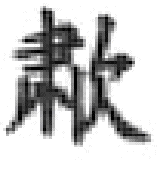《从罗教到青帮》，《南开史学》1984年第1期；马西沙《八卦教世袭传教家族的兴衰》，《清史研究集》，四川人民出版社，1986。
［48］ 见杜佑《通典》卷一九三、一九四。马西沙、韩秉方著《中国民间宗史》（上海人民出版社，1992）可以参考。
［49］ 参见白寿彝《中国伊斯兰之发展》等，见李兴华、冯今源编《中国伊斯兰教史参考资料选编》上册，宁夏人民出版社，1985；白寿彝《中国回教小史》，《中国伊斯兰史存稿》，宁夏人民出版社，1982。李兴华等人著《中国伊斯兰教史》（中国社会科学出版社，1998）可以参考。